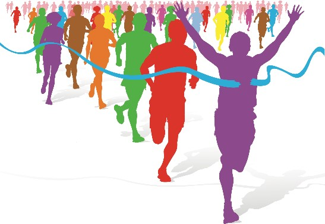

Engelsk B
kl. 09.00-14.00
Vejledning til opgavesættet
| Du skal besvare følgende opgaver: | |
|
|
| Tekster til Assignment 5: | |
| 5A – Fiction: | “Weightless and Hysterical”, a short story by Amanda Miska, 2016. |
| 5B – Non-fiction: | “How to fix a broken heart”, a TED talk by Guy Winch, 2017. |
Vejledning og skabelon til at løse opgaven
Den samlede eksaminationstid for Assignment 1-5 er 5 timer. Besvarelsen bedømmes som en helhed ud fra de faglige mål for niveauet. Der lægges vægt på beherskelsen af det engelske sprog, forståelse af forlægget og færdighed i skriftlig fremstilling på engelsk.
Det anbefales, at du skriver din besvarelse i skabelonen, som ligger under Template i menuen til venstre. Besvarelsen afleveres i ét dokument med opgaverne i rækkefølgen 1-5.
Henvisninger til tekst, video- og lydklip
Hvis du citerer, skal du angive kilde.
Alt anvendt materiale skal være engelsksproget og angives med kildehenvisninger. Til forklaring af grammatiske opgaver kan materialerne være på dansk.
Du kan henvise til dele af video- og lydklip, f.eks. ved at angive afspillerens minut- og sekundtal for henholdsvis starten og slutningen af klippet.
Alt anvendt materiale skal være engelsksproget og angives med kildehenvisninger. Til forklaring af grammatiske opgaver kan materialerne være på dansk.
Du kan henvise til dele af video- og lydklip, f.eks. ved at angive afspillerens minut- og sekundtal for henholdsvis starten og slutningen af klippet.
|
Tekster i opgavesættet
Teksternes ortografi og tegnsætning følger forlæggene. Trykfejl er dog rettet.
Opsætningen følger ikke nødvendigvis forlæggene. Dog følges forlægget nøje, hvor opsætningen på den ene eller anden måde indgår i opgaven.
Opsætningen følger ikke nødvendigvis forlæggene. Dog følges forlægget nøje, hvor opsætningen på den ene eller anden måde indgår i opgaven.
Assignment 1
Find alle verberne (udsagnsordene) i præsens (nutid) i nedenstående tekst, og omskriv dem til præteritum (datid). Skriv hele teksten som dit svar, og markér verberne tydeligt som i eksemplet.
| Eksempel: | Tom gropes amongst… Tom groped amongst… |
Tom gropes amongst the old shoe-boxes, fallen scarves, gloves, and belts, breathing in faded wafts of Sandra. Instead of the soft give of Sandra’s suede bag, his fingers find something hard. A smooth glass column. He draws it out carefully. The green of the bottle is so dark it’s almost black. It has the classic gold hood encasing the cork and neck. Moët & Chandon Grand Vintage 1988. The 1988 is inscribed in a dramatic flourish of white digits across the front of the label.
What a waste. Undrinkable now. Vintage, so a bit more longevity, but Champagne is generally short-lived. All tangy fizz and excitement at the beginning, but it’s not a keeper. He slumps onto his bottom on the bedroom floor and cradles the bottle in both hands. […]
He dives back in the wardrobe and finds the bag, agerashed1 and giving off a strange mix of Ysatis2 and mould. He takes the bottle and the bag downstairs. They sit together on the island as he scurries about unloading the dishwasher and tidying up. Not that there’s much to tidy up. Without Sandra and Freya everything stays in its place. He sprays the work surfaces and wonders if Sandra will be on time and whether she’ll stop for a bit. His eyes keep coming back to the Moët and the bloody clutch. He gets an ice-cooler from the freezer and shoves it over the bottle. Maybe it’s drinkable; he doesn’t like to waste.
Tom taps the details into his phone.
What a waste. Undrinkable now. Vintage, so a bit more longevity, but Champagne is generally short-lived. All tangy fizz and excitement at the beginning, but it’s not a keeper. He slumps onto his bottom on the bedroom floor and cradles the bottle in both hands. […]
He dives back in the wardrobe and finds the bag, agerashed1 and giving off a strange mix of Ysatis2 and mould. He takes the bottle and the bag downstairs. They sit together on the island as he scurries about unloading the dishwasher and tidying up. Not that there’s much to tidy up. Without Sandra and Freya everything stays in its place. He sprays the work surfaces and wonders if Sandra will be on time and whether she’ll stop for a bit. His eyes keep coming back to the Moët and the bloody clutch. He gets an ice-cooler from the freezer and shoves it over the bottle. Maybe it’s drinkable; he doesn’t like to waste.
Tom taps the details into his phone.
Melanie Whipman, “Tasting Notes”, 2018
1 marked by old age
2 perfume
Assignment 2
Besvar opgave a., b. og c. Brug relevant grammatisk terminologi. Husk kildehenvisning, hvis du citerer fra en grammatikbog. Skriv dit svar på dansk.
Lyt til videoklippet.
| a. | Find og skriv fire forskellige typer pronominer (stedord). Angiv for hvert pronomen, hvilken type det er. | |
| b. | Find og skriv to forskellige typer nægtende sætninger. Forklar ud fra dine eksempler, hvordan man på engelsk danner nægtende sætninger. | |
| c. | Angiv ud fra sammenhængen i videoen, hvilken ordklasse følgende ord tilhører: |
modelling: (0:44)
hope: (1:00)
increase: (1:10)
elderly: (1:24)
Jacinda Ardern hosts coronavirus Q&A from home after putting child to bed
Assignment 3
Nedenfor er angivet fire danske ord, som hver især er oversat til tre engelske ord efterfulgt af et billede.
Vælg for hvert billede det af de engelske ord, der passer bedst. Forklar kort, hvorfor det valgte ord passer bedst til billedet. Skriv dit svar på dansk.
1. Deling: platoon/partition/fission

2. Tegn: omen/constellation/character
3. Slutte: infer/terminate/finish

4. Samle: collect/gather/unite
Assignment 4
Write a text (50-75 words) to match the photo.
In your text, you must include and underline three different adjectives (tillægsord). One of them must be in the positive degree (1. grad), one must be in the comparative degree (2. grad) and one must be in the superlative degree (3. grad).
Assignment 5
- Answer 5A or 5B.
Assignment 5A - Fiction
- Write a short summary of Amanda Miska’s short story “Weightless and Hysterical” in about 125 words.
- Write an analytical essay (600-900 words) in which you analyse and interpret the short story. Your essay must focus on conflicts in the short story.
Include the following analytical terms in your essay:
setting, point of view, structure
Your essay must include references to the text.
Material
Amanda Miska, “Weightless and Hysterical”, 2016.
Assignment 5B - Non-fiction
- Write a short summary of the TED talk “How to fix a broken heart” in about 125 words.
- Write an analytical essay (600-900 words) about the TED talk. Your essay must focus on how Guy Winch engages the audience. Discuss briefly his advice on how to overcome heartbreak.
Include the following analytical terms in your essay:
structure, style, receivers
Your essay must include references to the text.
Material
Guy Winch, “How to fix a broken heart”, a TED talk from TED website, April 2017.
- TED talk: “How to fix a broken heart”
- Transcript: “How to fix a broken heart”
Sources
Anvendt materiale (til brug for Copydan):
Melanie Whipman. “Tasting Notes”. Karen Stevens and Jonathan Taylor (eds.). High Spirits. Scarborough: Valley Press, 2018.
Video. “Jacinda Ardern hosts coronavirus Q&A from home after putting child to bed”. Guardian News YouTube website, March 20, 2020, viewed April 2021. (www.youtube.com)
Image credit: “Zulu battalion one of 17 units cut as Army is slashed to its weakest since 1750”. Daily Mail website, July 6, 2012, viewed April 2021. (www.dailymail.co.uk)
Image credit: “Gemini”. Star Registration website, viewed April 2021. (www.starregistration.net)
Image credit: “Winning the race – at what cost”. MuslimVillage website, March 11, 2015, viewed April 2021. (www.muslimvillage.com)
Image credit: “5 Cool Ways to Display Vinyl Records That Won’t Hurt Them”. Big Fudge website, February 11, 2020, viewed April 2021. (www.bigfudgevinyl.com)
Image credit: “Dancing Seniors”. 1Funny website, viewed April 2021. (www.1funny.com)
Amanda Miska. “Weightless and Hysterical”. Little Fiction website, June 2016, viewed April 2021. (www.littlefiction.com)
Guy Winch. “How to fix a broken heart”. TED website, April 2017, viewed April 2021. (www.ted.com)